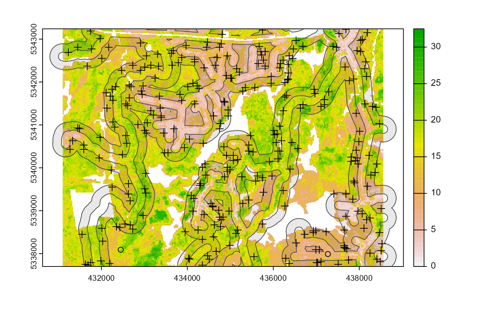
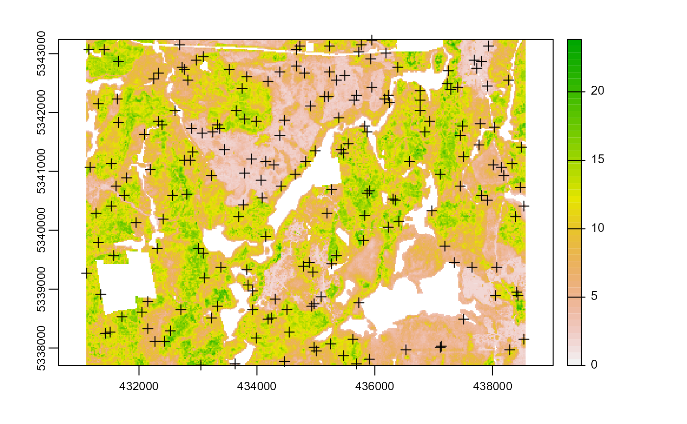
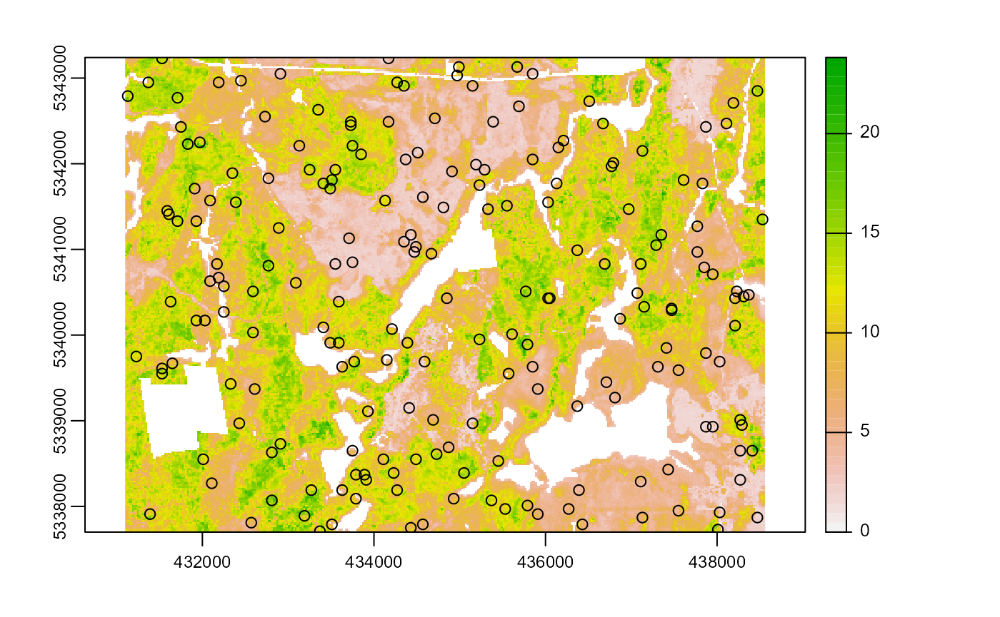
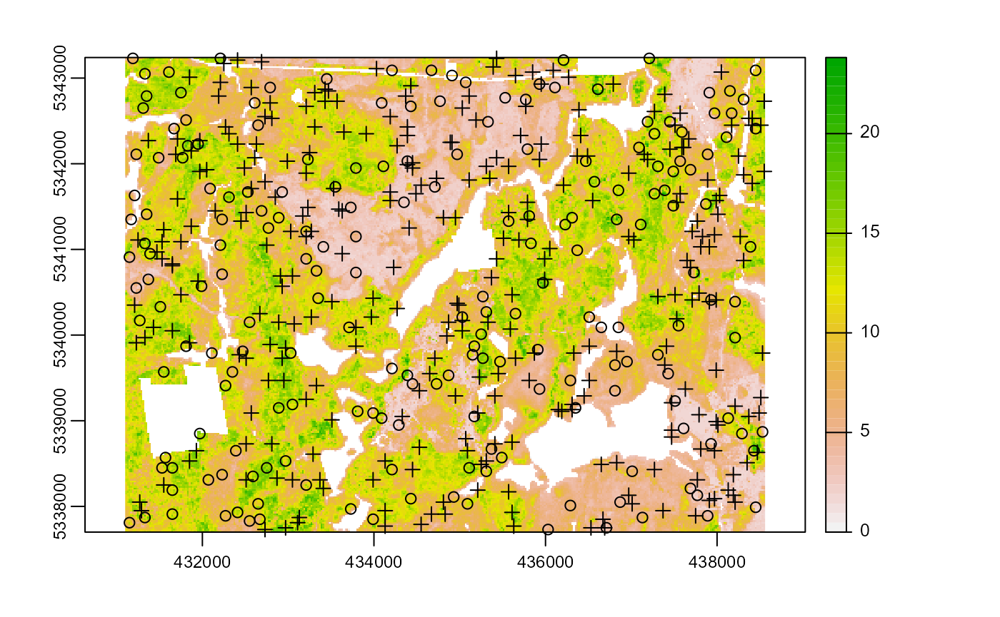

sampling
sampling.Rmd## Reading layer `roads' from data source
## `C:\Users\tgood.stu\AppData\Local\Temp\RtmpA3NsZl\temp_libpath49885f813331\sgsR\extdata\roads.shp'
## using driver `ESRI Shapefile'
## Simple feature collection with 167 features and 2 fields
## Geometry type: MULTILINESTRING
## Dimension: XY
## Bounding box: xmin: 431100 ymin: 5337700 xmax: 438560 ymax: 5343240
## Projected CRS: UTM_Zone_17_Northern_Hemisphere
sample_* functions
A total of 5 sample functions currently exist in the package:
sample_srs- simple random samplingsample_systematic- systematic sampling in a grid or hexagon tessellationsample_strat- stratified sampling within asrastersample_clhs- Latin hypercube sampling algorithmsample_balanced- Balanced sampling [@R-BalancedSampling]
Access
A feature of the sample_* functions that may be of interest is the ability to define access. Users can supply a road access network (must be sf line objects) and define buffers around access where samples should be excluded and included.
Important additional parameters when access is provided are:
buff_inner- An inner buffer that defines the distance fromaccesswhere samples cannot be takes (i.e. if you do not want samples within 50 m of youraccesslayer setbuff_inner = 50).buff_outer- Maximum distance samples can be located fromaccess(i.e. if you dont want samples more than 200 meters from a road setbuff_inner = 200)
sample_srs
We provided a very simple example of using the sample_srs function when we were preparing our existing data. We provide some additional examples below.
Notice that the input for sample_srs is raster. This means that either an sraster or an mraster can be supplied.
#--- perform simple random sampling ---#
sample_srs(raster = sraster, # input sraster
nSamp = 200, # number of desired samples
plot = TRUE) # plot
## Simple feature collection with 200 features and 0 fields
## Geometry type: POINT
## Dimension: XY
## Bounding box: xmin: 431110 ymin: 5337710 xmax: 438550 ymax: 5343210
## CRS: +proj=utm +zone=17 +ellps=GRS80 +towgs84=0,0,0,0,0,0,0 +units=m +no_defs
## First 10 features:
## geometry
## 1 POINT (431410 5341050)
## 2 POINT (436330 5341450)
## 3 POINT (438310 5341090)
## 4 POINT (436050 5340510)
## 5 POINT (435370 5342990)
## 6 POINT (432250 5338470)
## 7 POINT (434630 5339170)
## 8 POINT (434330 5340750)
## 9 POINT (434870 5337770)
## 10 POINT (436070 5339730)
sample_srs(raster = mraster, # input mraster
nSamp = 200, # number of desired samples
access = access, # define access road network
mindist = 200, # minimum distance samples must be apart from one another
buff_inner = 50, # inner buffer - no samples within this distance from road
buff_outer = 200, # outer buffer - no samples further than this distance from road
plot = TRUE) # plot
## Simple feature collection with 200 features and 0 fields
## Geometry type: POINT
## Dimension: XY
## Bounding box: xmin: 431270 ymin: 5337730 xmax: 438470 ymax: 5343230
## CRS: +proj=utm +zone=17 +ellps=GRS80 +towgs84=0,0,0,0,0,0,0 +units=m +no_defs
## First 10 features:
## geometry
## 1 POINT (435350 5342330)
## 2 POINT (434010 5342970)
## 3 POINT (431850 5343150)
## 4 POINT (437550 5339250)
## 5 POINT (435970 5339450)
## 6 POINT (434510 5343230)
## 7 POINT (432630 5338990)
## 8 POINT (433590 5340590)
## 9 POINT (435410 5340530)
## 10 POINT (437970 5339350)
sample_srs(raster = sraster, # input
nSamp = 200, # number of desired samples
access = access, # define access road network
buff_inner = 50, # inner buffer - no samples within this distance from road
buff_outer = 200, # outer buffer - no samples further than this distance from road
plot = TRUE, # plot
filename = tempfile(fileext = ".shp")) # write output samples to file
## Writing layer `file53304c4c6f9d' to data source
## `C:\Users\tgood.stu\AppData\Local\Temp\RtmpeSrITA\file53304c4c6f9d.shp' using driver `ESRI Shapefile'
## Writing 200 features with 0 fields and geometry type Point.## Simple feature collection with 200 features and 0 fields
## Geometry type: POINT
## Dimension: XY
## Bounding box: xmin: 431110 ymin: 5337730 xmax: 438530 ymax: 5343230
## CRS: +proj=utm +zone=17 +ellps=GRS80 +towgs84=0,0,0,0,0,0,0 +units=m +no_defs
## First 10 features:
## geometry
## 1 POINT (433090 5339350)
## 2 POINT (438250 5339350)
## 3 POINT (434170 5342770)
## 4 POINT (436910 5338050)
## 5 POINT (433290 5341370)
## 6 POINT (432830 5339830)
## 7 POINT (435590 5338610)
## 8 POINT (432010 5338430)
## 9 POINT (437270 5338010)
## 10 POINT (432190 5339490)
sample_systematic
The sample_systematic function applies systematic sampling across an area where the cellsize parameter defines resolution of the tessellation. Tesselation shape options are defined by the square parameter, which is a regular grid when TRUE (default) and hexagonal when FALSE. The location of samples can also be adjusted using the centers parameter, where TRUE takes the center of each tessellation, and FALSE takes all corners.
#--- perform grid sampling ---#
sample_systematic(raster = sraster, # input sraster
cellsize = 1000, # grid distance
plot = TRUE) # plot
## Simple feature collection with 40 features and 0 fields
## Geometry type: POINT
## Dimension: XY
## Bounding box: xmin: 431600 ymin: 5338200 xmax: 437600 ymax: 5343200
## CRS: +proj=utm +zone=17 +ellps=GRS80 +towgs84=0,0,0,0,0,0,0 +units=m +no_defs
## First 10 features:
## geometry
## 1 POINT (431600 5338200)
## 2 POINT (432600 5338200)
## 3 POINT (433600 5338200)
## 4 POINT (434600 5338200)
## 5 POINT (435600 5338200)
## 6 POINT (436600 5338200)
## 7 POINT (437600 5338200)
## 8 POINT (432600 5339200)
## 9 POINT (433600 5339200)
## 10 POINT (434600 5339200)
#--- perform grid sampling ---#
sample_systematic(raster = sraster, # input sraster
cellsize = 500, # grid distance
square = FALSE, # hexagonal tessellation
plot = TRUE) # plot
## Simple feature collection with 178 features and 0 fields
## Geometry type: POINT
## Dimension: XY
## Bounding box: xmin: 431100 ymin: 5337700 xmax: 438350 ymax: 5342896
## CRS: +proj=utm +zone=17 +ellps=GRS80 +towgs84=0,0,0,0,0,0,0 +units=m +no_defs
## First 10 features:
## geometry
## 1 POINT (431100 5337700)
## 2 POINT (431100 5338566)
## 3 POINT (431100 5339432)
## 4 POINT (431100 5340298)
## 5 POINT (431100 5341164)
## 6 POINT (431100 5342030)
## 7 POINT (431100 5342896)
## 8 POINT (431350 5338133)
## 9 POINT (431350 5339865)
## 10 POINT (431350 5340731)
#--- perform grid sampling ---#
sample_systematic(raster = sraster, # input sraster
cellsize = 500, # grid distance
square = FALSE, # hexagonal tessellation
centers = FALSE, # take corners instead of centers
plot = TRUE) # plot
## Simple feature collection with 1202 features and 0 fields
## Geometry type: POINT
## Dimension: XY
## Bounding box: xmin: 431100 ymin: 5337844 xmax: 438350 ymax: 5343185
## CRS: +proj=utm +zone=17 +ellps=GRS80 +towgs84=0,0,0,0,0,0,0 +units=m +no_defs
## First 10 features:
## geometry
## 1 POINT (431100 5338277)
## 2 POINT (431100 5337989)
## 3 POINT (431100 5339143)
## 4 POINT (431100 5338855)
## 5 POINT (431100 5340009)
## 6 POINT (431100 5339721)
## 7 POINT (431100 5340875)
## 8 POINT (431100 5340587)
## 9 POINT (431100 5341453)
## 10 POINT (431100 5342607)
sample_systematic(raster = sraster, # input sraster
cellsize = 500, # grid distance
access = access, # define access road network
square = FALSE, # hexagonal tessellation
buff_inner = 50, # inner buffer - no samples within this distance from road
buff_outer = 200) # outer buffer - no samples further than this distance from road## Simple feature collection with 74 features and 0 fields
## Geometry type: POINT
## Dimension: XY
## Bounding box: xmin: 431350 ymin: 5337700 xmax: 438350 ymax: 5342896
## CRS: +proj=utm +zone=17 +ellps=GRS80 +towgs84=0,0,0,0,0,0,0 +units=m +no_defs
## First 10 features:
## geometry
## 1 POINT (431350 5340731)
## 2 POINT (431350 5342463)
## 3 POINT (431600 5338566)
## 4 POINT (431850 5342463)
## 5 POINT (432100 5337700)
## 6 POINT (432100 5342896)
## 7 POINT (432350 5338999)
## 8 POINT (432600 5338566)
## 9 POINT (432600 5340298)
## 10 POINT (432600 5341164)
sample_systematic(raster = mraster, # input mraster
cellsize = 1000, # grid distance
access = access, # define access road network
buff_inner = 100, # inner buffer - no samples within this distance from road
buff_outer = 400, # outer buffer - no samples further than this distance from road
filename = tempfile(fileext = ".shp"), # write output samples to file
plot = TRUE) # plot
## Writing layer `file53301e986b2e' to data source
## `C:\Users\tgood.stu\AppData\Local\Temp\RtmpeSrITA\file53301e986b2e.shp' using driver `ESRI Shapefile'
## Writing 21 features with 0 fields and geometry type Point.## Simple feature collection with 21 features and 0 fields
## Geometry type: POINT
## Dimension: XY
## Bounding box: xmin: 431600 ymin: 5338200 xmax: 437600 ymax: 5343200
## CRS: +proj=utm +zone=17 +ellps=GRS80 +towgs84=0,0,0,0,0,0,0 +units=m +no_defs
## First 10 features:
## geometry
## 1 POINT (431600 5338200)
## 2 POINT (434600 5338200)
## 3 POINT (435600 5338200)
## 4 POINT (437600 5338200)
## 5 POINT (432600 5339200)
## 6 POINT (434600 5339200)
## 7 POINT (435600 5339200)
## 8 POINT (431600 5340200)
## 9 POINT (433600 5340200)
## 10 POINT (434600 5340200)
sample_strat
The sample_strat function contains a hierarchical sampling algorithm originally developed my Martin Queinnec. The algorithm uses a moving window (wrow and wcol parameters) to filter the input sraster for locations where stratum pixels are spatially grouped rather than dispersed individually across the landscape.
The sampling is performed in 2 stages:
Rule 1 - Sample within spatially grouped stratum pixels. Moving window defined by
wrowandwcol.Rule 2 - If no more samples exist to satisfy desired sampling count, individual stratum pixels are sampled.
The rule applied to a select a particular sample is defined in the rule attribute of output samples. We give a few examples below:
#--- perform stratified sampling random sampling ---#
sample_strat(sraster = sraster, # input sraster
nSamp = 200, # desired sample number
plot = TRUE) # plot
## Simple feature collection with 200 features and 3 fields
## Geometry type: POINT
## Dimension: XY
## Bounding box: xmin: 431130 ymin: 5337730 xmax: 438530 ymax: 5343190
## CRS: +proj=utm +zone=17 +ellps=GRS80 +towgs84=0,0,0,0,0,0,0 +units=m +no_defs
## First 10 features:
## strata type rule geometry
## x 1 new rule1 POINT (431210 5337830)
## x1 1 new rule1 POINT (432910 5342310)
## x2 1 new rule1 POINT (432210 5337870)
## x3 1 new rule1 POINT (436970 5339470)
## x4 1 new rule1 POINT (436910 5337810)
## x5 1 new rule1 POINT (436530 5338370)
## x6 1 new rule1 POINT (432730 5342470)
## x7 1 new rule1 POINT (434890 5338050)
## x8 1 new rule1 POINT (432670 5339550)
## x9 1 new rule1 POINT (437950 5341210)In some cases, a user may wish to include an existing sample dataset within the algorithm. In order to adjust the total number of samples needed per stratum to reflect those already present in existing, we can use the utility function extract_strata.
This function takes an input sraster and the existing sample dataset and extracts the stratum for each sample. These samples can then be input into the sample_strat() function which adjusts total required sample per class based on representation in existing.
#--- extract strata values to existing samples ---#
e.sr <- extract_strata(sraster = sraster, # input sraster
existing = existing) # existing samples to add strata value to
e.sr## Simple feature collection with 200 features and 1 field
## Geometry type: POINT
## Dimension: XY
## Bounding box: xmin: 431150 ymin: 5337730 xmax: 438530 ymax: 5343230
## Projected CRS: UTM Zone 17, Northern Hemisphere
## First 10 features:
## strata geometry
## 1 1 POINT (434210 5343090)
## 2 1 POINT (438310 5342750)
## 3 3 POINT (434350 5341550)
## 4 3 POINT (437610 5338910)
## 5 3 POINT (434770 5342730)
## 6 4 POINT (435830 5341070)
## 7 1 POINT (434870 5339530)
## 8 3 POINT (434210 5339610)
## 9 2 POINT (433050 5339190)
## 10 3 POINT (435330 5342490)Notice that e.sr now has an attribute named strata. If that parameter is not there, sample_strat() will give an error.
sample_strat(sraster = sraster, # input sraster
nSamp = 200, # desired sample number
access = access, # define access road network
existing = e.sr, # existing samples with strata values
mindist = 200, # minimum distance samples must be apart from one another
buff_inner = 50, # inner buffer - no samples within this distance from road
buff_outer = 200, # outer buffer - no samples further than this distance from road
plot = TRUE) # plot
## Simple feature collection with 400 features and 3 fields
## Geometry type: POINT
## Dimension: XY
## Bounding box: xmin: 431150 ymin: 5337730 xmax: 438530 ymax: 5343230
## CRS: +proj=utm +zone=17 +ellps=GRS80 +towgs84=0,0,0,0,0,0,0 +units=m +no_defs
## First 10 features:
## strata type rule geometry
## 1 1 existing existing POINT (434210 5343090)
## 2 1 existing existing POINT (438310 5342750)
## 7 1 existing existing POINT (434870 5339530)
## 15 1 existing existing POINT (435070 5342950)
## 23 1 existing existing POINT (436810 5339350)
## 24 1 existing existing POINT (437570 5342030)
## 36 1 existing existing POINT (432670 5337850)
## 37 1 existing existing POINT (435310 5340270)
## 39 1 existing existing POINT (436350 5339150)
## 43 1 existing existing POINT (437930 5340410)The mindist parameter defined in the above example specifies the minimum euclidian distance that samples must be apat from one another.
Notice that the sample outputs have type and rule attributes which outline whether samples are existing or new and whether rule1 or rule2 were used to select individual samples.
sample_strat(sraster = sraster, # input
nSamp = 200, # desired sample number
access = access, # define access road network
existing = e.sr, # existing samples with strata values
include = TRUE, # include existing plots in nSamp total
buff_inner = 50, # inner buffer - no samples within this distance from road
buff_outer = 200, # outer buffer - no samples further than this distance from road
filename = tempfile(fileext = ".shp"), # write output samples to file
plot = TRUE) # plot
## Writing layer `file533055ffd5f' to data source
## `C:\Users\tgood.stu\AppData\Local\Temp\RtmpeSrITA\file533055ffd5f.shp' using driver `ESRI Shapefile'
## Writing 200 features with 3 fields and geometry type Point.## Simple feature collection with 200 features and 3 fields
## Geometry type: POINT
## Dimension: XY
## Bounding box: xmin: 431150 ymin: 5337730 xmax: 438530 ymax: 5343230
## CRS: +proj=utm +zone=17 +ellps=GRS80 +towgs84=0,0,0,0,0,0,0 +units=m +no_defs
## First 10 features:
## strata type rule geometry
## 1 1 existing existing POINT (434210 5343090)
## 2 1 existing existing POINT (438310 5342750)
## 7 1 existing existing POINT (434870 5339530)
## 15 1 existing existing POINT (435070 5342950)
## 23 1 existing existing POINT (436810 5339350)
## 24 1 existing existing POINT (437570 5342030)
## 36 1 existing existing POINT (432670 5337850)
## 37 1 existing existing POINT (435310 5340270)
## 39 1 existing existing POINT (436350 5339150)
## 43 1 existing existing POINT (437930 5340410)
sample_clhs
The sample_clhs function implements conditioned latin hypercube (clhs) sampling functionality. A number of other functions in the sgsR package help to provide guidance on clhs sampling including calculate_lhsPop and calculate_lhsOpt. Be sure to check out those functions for better understanding of how to optimize sample numbers.
Syntax for this function is similar to others shown above, though parameters like iter, which define the number of iterations within the Metropolis-Hastings process are important to consider. In these examples we use a low iter value because it takes less time to run. Default values for iter within the clhs package are 10,000.
sample_clhs(mraster = mraster, # input
nSamp = 200, # desired sample number
plot = TRUE, # plot
iter = 100) # number of iterations
sample_clhs(mraster = mraster, # input
nSamp = 300, # desired sample number
existing = existing, # existing samples
iter = 100, # number of iterations
details = TRUE, # output details
plot = TRUE) # clhs details
sample_clhs(mraster = mraster, # input
nSamp = 300, # desired sample number
iter = 100, # number of iterations
existing = existing, # existing samples
access = access, # define access road network
buff_inner = 100, # inner buffer - no samples within this distance from road
buff_outer = 300, # outer buffer - no samples further than this distance from road
plot = TRUE) # plot
The cost parameter defines an mraster covariate to be used to constrain the clhs sampling. This could be any number of variables. An example could be the distance a pixel is from road access (see example below), terrain slope, the output from calculate_coobs, or many others.
#--- cost constrained examples ---#
#--- calculate distance to access layer for each pixel in mr ---#
mr.c <- calculate_distance(raster = mraster, # input
access = access,
plot = TRUE) # define access road network
sample_clhs(mraster = mr.c, # input
nSamp = 250, # desired sample number
iter = 100, # number of iterations
cost = "dist2access", # cost parameter - name defined in calculate_distance()
plot = TRUE) # plot
sample_clhs(mraster = mr.c, # input
nSamp = 250, # desired sample number
existing = existing, # existing samples
iter = 100, # number of iterations
cost = "dist2access", # cost parameter - name defined in calculate_distance()
plot = TRUE) # plot
sample_balanced
The sample_balanced algorithm performs the balanced sampling methodology from the stratifyR and SamplingBigData packages. These functions can take a bit longer to run so be patient!
sample_balanced(mraster = mraster, # input
nSamp = 200, # desired sample number
plot = TRUE) # plot
## Simple feature collection with 200 features and 0 fields
## Geometry type: POINT
## Dimension: XY
## Bounding box: xmin: 431130 ymin: 5337710 xmax: 438550 ymax: 5343190
## CRS: +proj=utm +zone=17 +ellps=GRS80 +towgs84=0,0,0,0,0,0,0 +units=m +no_defs
## First 10 features:
## geometry
## 1 POINT (431930 5343190)
## 2 POINT (433610 5343190)
## 3 POINT (431230 5343150)
## 4 POINT (435930 5343090)
## 5 POINT (431650 5343050)
## 6 POINT (435390 5343050)
## 7 POINT (438290 5343050)
## 8 POINT (437070 5343030)
## 9 POINT (437150 5342950)
## 10 POINT (434870 5342910)
sample_balanced(mraster = mraster, # input
nSamp = 100, # desired sample number
algorithm = "lcube", # algorithm type
access = access, # define access road network
buff_inner = 50, # inner buffer - no samples within this distance from road
buff_outer = 200) # outer buffer - no samples further than this distance from road## Simple feature collection with 100 features and 0 fields
## Geometry type: POINT
## Dimension: XY
## Bounding box: xmin: 431450 ymin: 5337750 xmax: 438550 ymax: 5343230
## CRS: +proj=utm +zone=17 +ellps=GRS80 +towgs84=0,0,0,0,0,0,0 +units=m +no_defs
## First 10 features:
## geometry
## 1 POINT (432630 5341090)
## 2 POINT (434270 5337750)
## 3 POINT (437630 5339310)
## 4 POINT (434270 5338750)
## 5 POINT (436070 5342890)
## 6 POINT (433010 5341450)
## 7 POINT (434770 5337830)
## 8 POINT (433550 5341070)
## 9 POINT (435490 5338250)
## 10 POINT (436470 5341190)
sample_ahels
The sample_ahels function performs the adapted Hypercube Evaluation of a Legacy Sample (ahels) algorithm using existing sample data and an mraster. New samples are allocated based on quantile ratios between the existing sample and mraster covariate dataset.
This algorithm:
Determines the quantile distributions of
existingsamples andmrastercovariates.Determines quantiles where there is a disparity between samples and covariates.
Prioritizes sampling within those quantile to improve representation.
To use the function, the user will first specify the number of quantiles (nQuant) followed by either the nSamp (total number of desired samples to be added) or threshold (proportional representation between sample and covariate quantiles - default is 0.9) parameters. Its recommended to use threshold values at or below 0.9 as higher values can currently cause the algorithm to add samples repeatedly.
sample_ahels(mraster = mraster[[1:3]], # input mraster - first 3 layers only
existing = existing, # existing samples
plot = TRUE) # plot
## Simple feature collection with 226 features and 4 fields
## Geometry type: POINT
## Dimension: XY
## Bounding box: xmin: 431150 ymin: 5337710 xmax: 438530 ymax: 5343230
## CRS: +proj=utm +zone=17 +ellps=GRS80 +towgs84=0,0,0,0,0,0,0 +units=m +no_defs
## First 10 features:
## type zmax zmean zsd geometry
## 1 existing 8.950000 83.3 5.13 POINT (434210 5343090)
## 2 existing 7.170000 72.5 4.77 POINT (438310 5342750)
## 3 existing 2.680000 33.4 1.05 POINT (434350 5341550)
## 4 existing 1.940000 11.9 0.65 POINT (437610 5338910)
## 5 existing 3.000000 23.9 1.96 POINT (434770 5342730)
## 6 existing 15.179999 91.2 5.73 POINT (435830 5341070)
## 7 existing 8.929999 6.8 4.09 POINT (434870 5339530)
## 8 existing 0.000000 0.0 0.00 POINT (434210 5339610)
## 9 existing 11.349999 95.2 3.74 POINT (433050 5339190)
## 10 existing 2.920000 19.0 2.42 POINT (435330 5342490)Notice that no threshold, nSamp, or nQuant were defined. Thats because defaults are threshold = 0.9 and nQuant = 10.
The first matrix output shows the quantile ratios between sample and covariates. A value of 1.0 means that samples and covariates are equally represented. Values above 1.0 are over represented in the sample, less than 1 under represented in the sample.
sample_ahels(mraster = mraster[[1:3]], # input mraster - first 3 layers only
existing = existing, # existing samples
nQuant = 20, # define 20 quantiles
nSamp = 300, # total samples desired
filename = tempfile(fileext = ".shp")) # write samples to disc
## Simple feature collection with 500 features and 4 fields
## Geometry type: POINT
## Dimension: XY
## Bounding box: xmin: 431150 ymin: 5337730 xmax: 438550 ymax: 5343230
## CRS: +proj=utm +zone=17 +ellps=GRS80 +towgs84=0,0,0,0,0,0,0 +units=m +no_defs
## First 10 features:
## type zmax zmean zsd geometry
## 1 existing 8.950000 83.3 5.13 POINT (434210 5343090)
## 2 existing 7.170000 72.5 4.77 POINT (438310 5342750)
## 3 existing 2.680000 33.4 1.05 POINT (434350 5341550)
## 4 existing 1.940000 11.9 0.65 POINT (437610 5338910)
## 5 existing 3.000000 23.9 1.96 POINT (434770 5342730)
## 6 existing 15.179999 91.2 5.73 POINT (435830 5341070)
## 7 existing 8.929999 6.8 4.09 POINT (434870 5339530)
## 8 existing 0.000000 0.0 0.00 POINT (434210 5339610)
## 9 existing 11.349999 95.2 3.74 POINT (433050 5339190)
## 10 existing 2.920000 19.0 2.42 POINT (435330 5342490)Note that the total number of samples is 500. This is the total of existing samples (200) and the number defined by nSamp = 300.